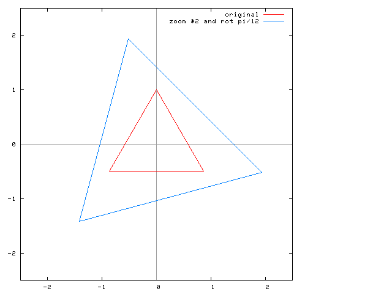

[code 1]
01:
02:
03: immutable class POINT < $STR is
04: readonly attr x,y:FLT;
05:
06: create(x0,y0:FLT):SAME is
07: res:SAME;
08: res:=res.x(x0);
09: res:=res.y(y0);
10: return res;
11: end;
12:
13: is_eq(p:SAME):BOOL is
14: return x=p.x and y=p.y;
15: end;
16:
17: plus(p:SAME):SAME is
18: return #SAME(x+p.x, y+p.y);
19: end;
20:
21: minus(p:SAME):SAME is
22: return #SAME(x-p.x, y-p.y);
23: end;
24:
25: times(n:FLT):SAME is
26: return #SAME(x*n, y*n);
27: end;
28:
29: div(n:FLT):SAME is
30: return #SAME(x/n, y/n);
31: end;
32:
33: negate:SAME is
34: return #SAME(-x, -y);
35: end;
36:
37: abs:FLT is
38: return (x*x+y*y).sqrt;
39: end;
40:
41: rotate(theta:FLT):SAME is
42: theta := y.atan2(x)+theta;
43: return #SAME(self.abs*theta.cos, self.abs*theta.sin);
44: end;
45:
46: str:STR is
47: return "(" + x.str +"," + y.str +")";
48: end;
49: end;
50:
51: class MAIN is
52: const pi:FLT:= FLT::pi;
53: const fout:STR:="point.out";
54:
55: rz_polygon(a:ARRAY{POINT}, zoom, theta:FLT):ARRAY{POINT} is
56: a1:ARRAY{POINT}:=#(a.size);
57: loop
58: a1.set!(a.elt!.rotate(theta).times(zoom));
59: end;
60: return a1;
61: end;
62:
63: out2file(a0,a1:ARRAY{POINT}) is
64: f:FILE:=FILE::open_for_write(fout);
65: p0,p1:POINT;
66: i:INT;
67: loop
68: i:=(a0.size+1).times!;
69: if i = a0.size then i:=0; end;
70: p0:=a0[i];
71: p1:=a1[i];
72: f + p0.x + "\t" + p0.y + "\t" + p1.x + "\t" + p1.y + "\n";
73: end;
74: f.close;
75: end;
76:
77: main is
78: p0:POINT:=#(0.0,1.0);
79: a0:ARRAY{POINT}:=#(3);
80:
81: loop
82: a0.set!(p0.rotate(3.times!.flt*2.0*pi/3.0));
83: end;
84:
85: out2file(a0, rz_polygon(a0, 2.0, pi/12.0));
86:
87: end;
88: end;
Figure 1 shows the result plotted by the gnuplot.

Fig. 1: Original triangle (red) and one after zooming (x 2) and rotation (15 degree) (blue).
3. Summary
Instances of immutable classes are operated faster than those of conventional ones.
As a result, a class that makes many instances should be defined as a immutable class from the aspect of efficiency.
 HOME
HOME Post Messages
Post Messages